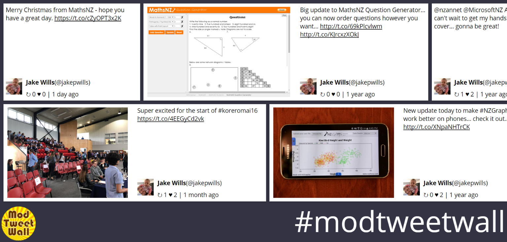

Mod Tweet Wall
home

Note: due to Twitter's API changes this service no longer works
If you want custom work done for your event, get in touch.
Free tweet wall with moderation features
Have you ever wanted a tweet wall at your event, but been worried that inappropriate comments will come up? Now there is a solution... Mod Tweet Wall.
Only the tweets that you approve will appear on the tweet wall, meaning you have full control and no inappropriate comments can show up on your live display.
Get started today
As used by Criss Angel at his show Mindfreak at Planet Hollywood
Search for tweets and add them to the approved list, or mark them as not approved:

You can then display your approved tweets on a rotating wall either as a single tweet:
Or two rows of scrolling tweets:

So what are you waiting for? Get started today.
(You'll need a twitter account)
© Jake Wills 2020
Privacy Policy
Terms of Service